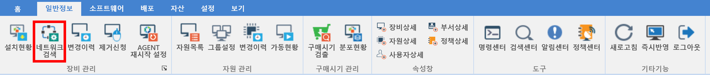
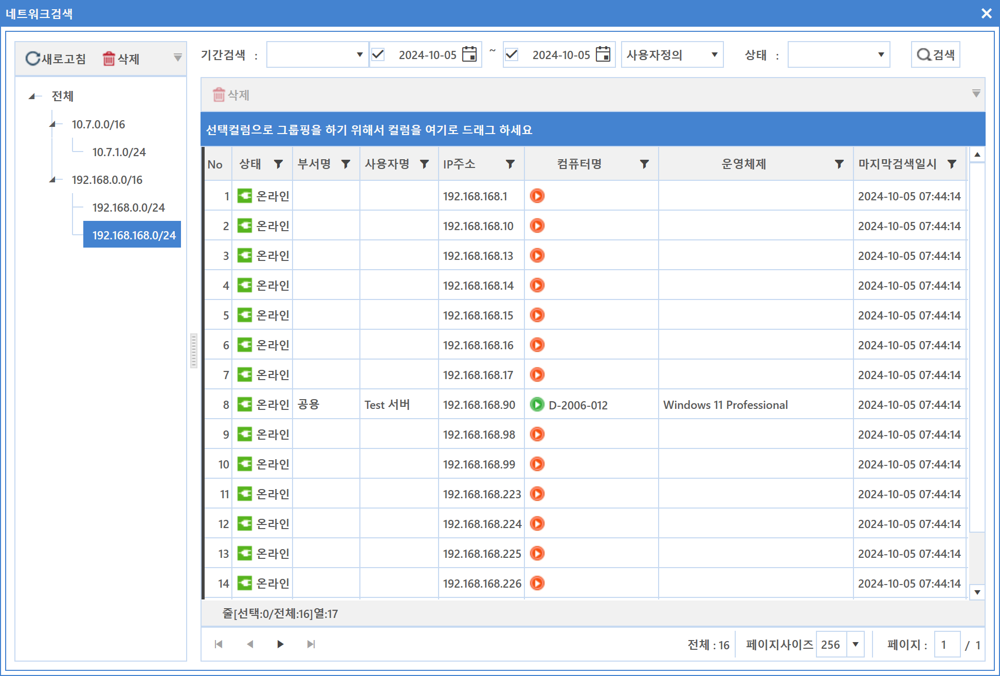
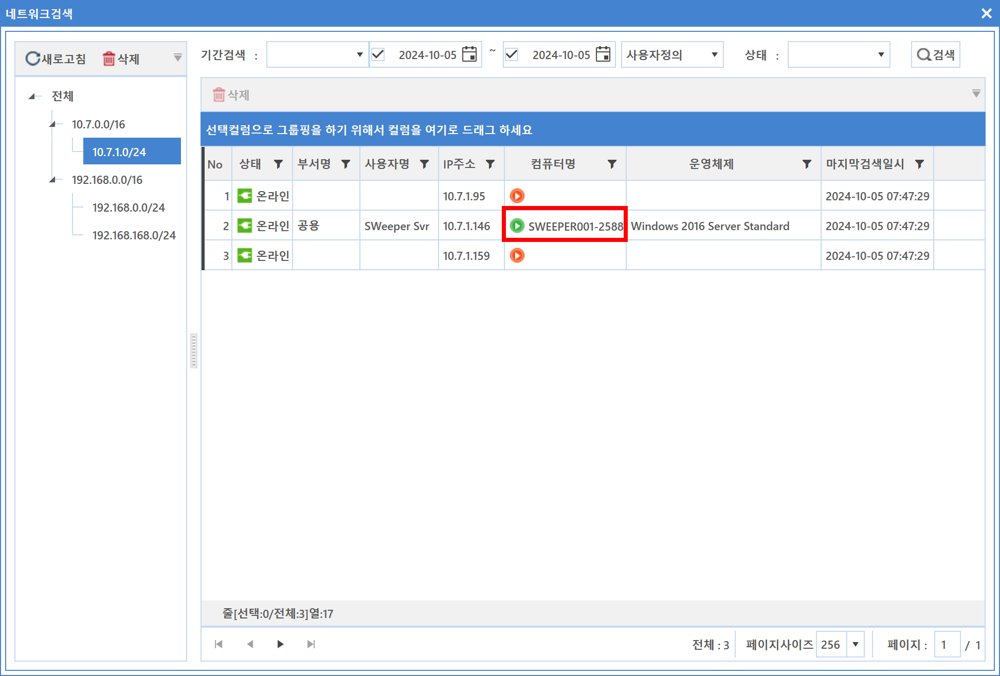
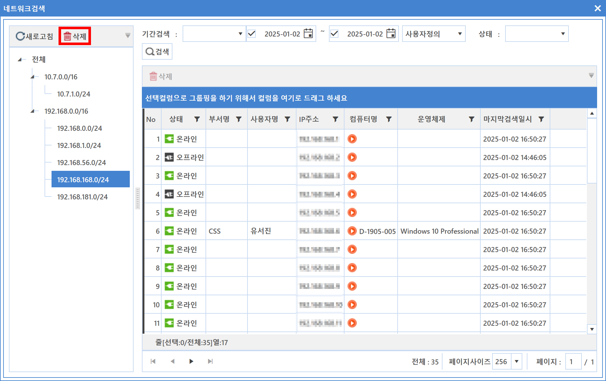
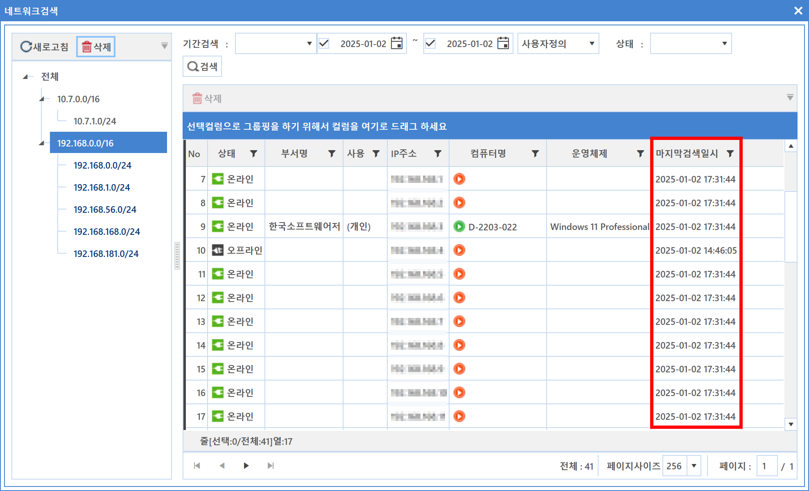

4-1-2. 네트워크 검색
4-1-2. 네트워크 검색
Source: https://www.sweeper.or.kr/etc/manual/412.html
4-1-2. 네트워크 검색


IP주소를 사용하는 모든 장비를 검색할 수 있으며, 에이전트 설치/미설치 구분 및 SNMP를 사용하는 Network 장비도 확인 가능합니다.

[환경설정] - [일반] - [AGENT]에서 설정된 네트워크 범위를 기준으로 에이전트 작동 기능을 통해 기능이 활성화 되며,
C Class를 기본 단위로 설치된 에이전트 중 임의 한대가 검색을 위한 Master Probe로 동작합니다.
검색된 Network정보는 C Class 단위로 트리구조로 자동 생성되고 수집된 정보도 표시됩니다.
단, C Class 기준으로 설치된 에이전트가 없다면, 기타 장비가 존재하더라도 검색이 되지 않습니다.

각 서브넷에는 한개의 마스터가 존재(녹색의 활성화 표시)하며, 해당 네트워크에 대한 정보를 수집하는 역할을 합니다.

특정 서브넷의 누적된 불필요한 정보(오프라인)를 삭제할 때는 우클릭의 "데이터 삭제"를 이용하며 마스터가 신규 정보를 다시 업데이트 합니다.

마지막 검색일시는 해당 IP가 마스터에 마지막으로 온라인 검색된 시간을 의미합니다.

참고사항
- Master Probe 기능은 윈도우 Agent만 지원합니다.
- 검색주기는 [환경설정] - [일반설정] - [Agent] - [네트워크검색 설정]에서 가능합니다.
© Copyright SWeeper Inc.. All Rights Reserved